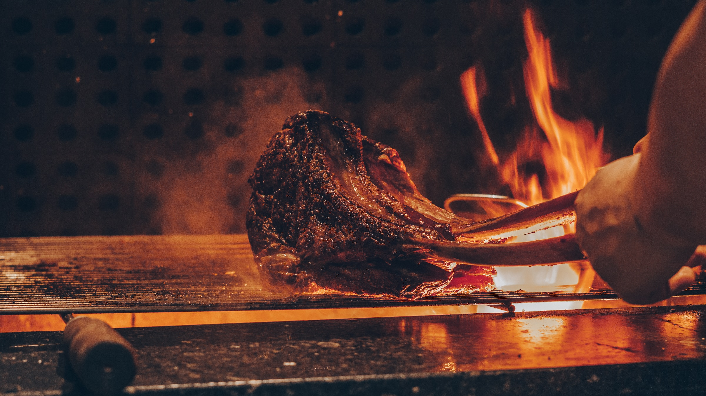

Welcome to Yummy Steak House
We use USDA prima beef

Yummy Steak House Since 2007
We only use USDA certified 1855 Black Angus beef. Its rich complexity and lush consistency is transformed to perfection in the hands of our expert steak chefs. Our mussels, sustainably sourced by Kinkawooka Mussels from the cold, pristine waters of Southern Australia, have a softness and sweetness that makes them just perfect for eating, in every way.